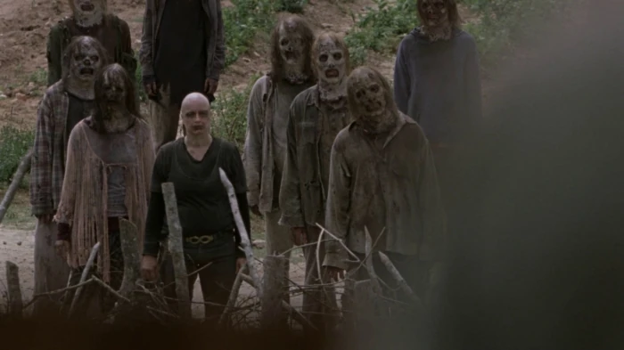

Cuando se produjo el cambio en el mundo, Alpha junto a su hija Lydia sobrevivieron lo suficiente hasta fundar un gigantesco grupo de personas y con el tiempo descubrió una manera más ingeniosa de protegerse de las atrocidades que invadían el mundo, por medio de vestirse con la piel de caminante y moverse entre las hordas para atacar otros campamentos de supervivientes.